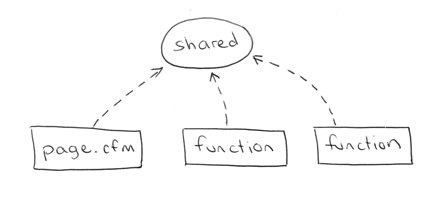
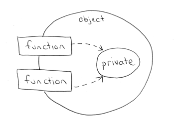
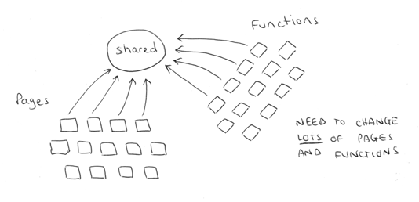
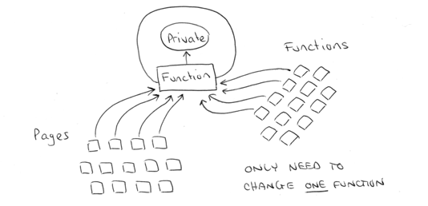

ColdFusion started its life as a procedural language and only in more recent times gained object oriented features. As a result of this history there is a substantial number of procedural ColdFusion systems in existence today. Considering this, it's worth taking a brief look at what it means to write procedural code and then see how this differs from an object oriented approach.
To make this comparison we need to first consider the problem that both approaches help us to solve. When programming any system you are essentially dealing with data and the code that changes that data. These two fundamental aspects of programming are handled quite differently in procedural systems compared with object oriented systems, and these differences require different strategies in how we think about writing code.
In procedural programing our code is organised into small "procedures" that use and change our data. In ColdFusion, we write our procedures as either custom tags or functions. These functions typically take some input, do something, then produce some output. Ideally your functions would behave as "black boxes" where input data goes in and output data comes out.
The key idea here is that our functions have no intrinsic relationship with the data they operate on. As long as you provide the correct number and type of arguments, the function will do its work and faithfully return its output.
Sometimes our functions need to access data that is not provided as a parameter, i.e., we need access data that is outside the function. Data accessed in this way is considered "global" or "shared" data.

So in a procedural system our functions use data they are "given" (as parameters) but also directly access any shared data they need.
In object oriented programming, the data and related functions are bundled together into an "object". Ideally, the data inside an object can only be manipulated by calling the object's functions. This means that your data is locked away inside your objects and your functions provide the only means of doing something with that data. In a well designed object oriented system objects never access shared or global data, they are only permitted to use the data they have, or data they are given.

We can see that one of the principle differences is that procedural systems make use of shared and global data, while object oriented systems lock their data privately away in objects.
Let's consider a scenario where you need to change a shared variable in a procedural system. Perhaps you need to rename it, change it from a string to a numeric, change it from a struct to an array, or even remove it completely.
In a procedural application you would need to find and change each place in the code where that variable is referenced. In a large system this can be a widespread and difficult change to make.

In an object oriented system we know that all variables are inside objects and that only functions within those objects can access or change those variables. When a variable needs to be changed then we only need to change the functions that access those variables. As long as we take care that the functions' input arguments and output types are not changed, then we don't need to change any other part of the system.

Object oriented design is complicated to do well, and a substantial amount of time is likely to be required to learn it in depth. If you have been developing procedural systems for some time then object oriented concepts will require learning a different way of thinking which is always challenging and requires effort.
However the time to learn is not the only cost. Once you start learning, you may start to question yourself time and time again if you are writing code "correctly". Your productivity may be affected as you try different ideas, aiming for a good object oriented solution.
A further cost to consider is not specific to OO, but is specific to OO within ColdFusion. You may read many object oriented articles and books but you cannot apply their teachings blindly in your ColdFusion applications. There is a performance factor associated with creating objects in ColdFusion so applying many of the pure object oriented ideas can adversely affect your application. This then adds an additional challenge in knowing when not to apply some object oriented ideas.
Now that we have some basic grounding on how OO differs from procedural code, let's introduce objects.